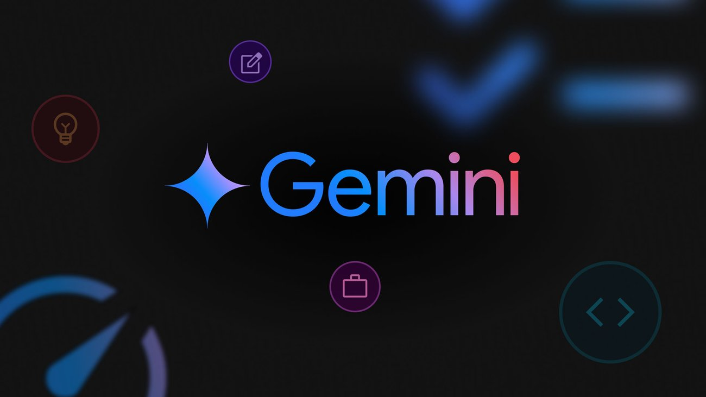

Gemini Nano
- Optimizado para dispositivos móviles y aplicaciones locales.
- Bajo consumo de recursos y alta eficiencia.
- Ideal para tareas como autocompletado, sugerencias inteligentes y asistentes personales.
- Funciona sin conexión a internet.
Gemini Pro
- Modelo versátil para aplicaciones en la nube y web.
- Capacidades avanzadas de comprensión y generación de texto.
- Soporte multimodal: texto, imágenes, audio y video.
- Integración con productos de Google como Bard y Workspace.
Gemini Ultra
- El modelo más potente y avanzado de la familia Gemini.
- Rendimiento superior en benchmarks de IA y tareas complejas.
- Capacidad de razonamiento avanzado y análisis profundo.
- Diseñado para investigación, empresas y aplicaciones críticas.
Comparativa de Gemini con otros modelos de IA
Gemini ha sido evaluado frente a otros modelos líderes como GPT-4, Claude 3 y Qwen en diversos benchmarks de comprensión, generación y razonamiento. Los resultados muestran que Gemini Ultra supera a la competencia en varias métricas clave, especialmente en tareas multimodales y de razonamiento complejo.
¿Por qué elegir Gemini?
- Rendimiento líder en tareas multimodales y de razonamiento.
- Modelos adaptados a diferentes necesidades: desde móviles hasta investigación avanzada.
- Integración nativa con el ecosistema Google.
- Actualizaciones constantes y soporte de una de las empresas líderes en IA.
Galería de Imágenes
